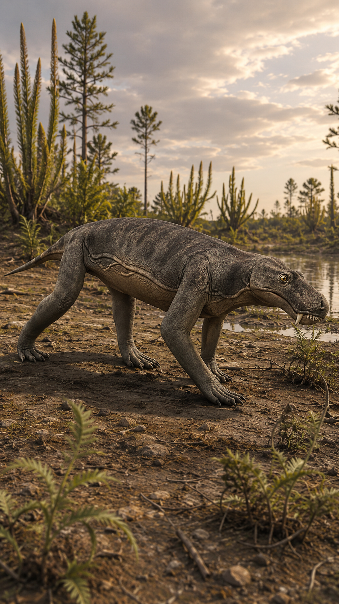
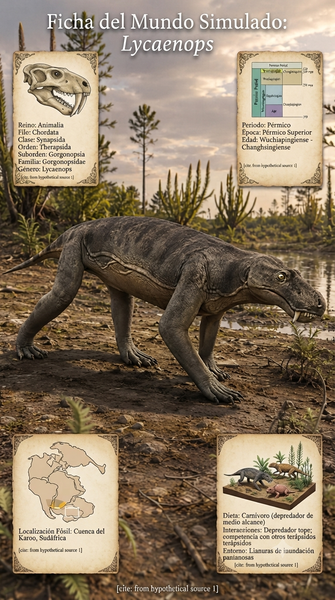
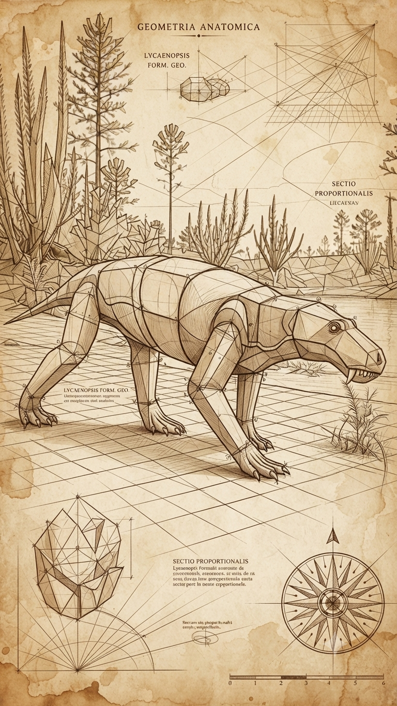
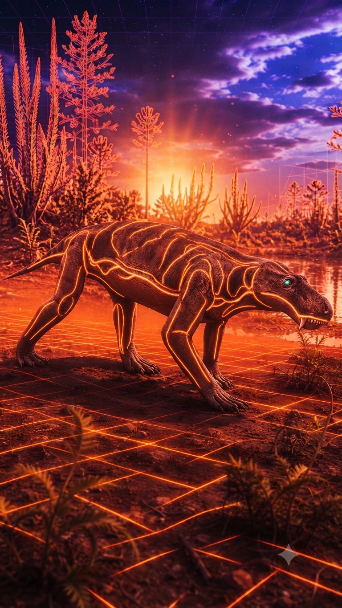

Paleoficha de Lycaenops




Periodo: Pérmico Superior (Wuchiapingiense)
Edad: Hace aproximadamente 255 millones de años.
Dieta: Carnívoro.
Distribución: Formación Beaufort, Cuenca del Karoo (Sudáfrica).
TAXÓN:
Lycaenops
CLADO:
Gorgonopsia (Therapsida)
DIETA:
Carnívoro especializado en presas pequeñas y medianas.
TAMAÑO:
Aproximadamente 1 metro de longitud.
LOCOMOCIÓN:
Cuadrúpeda, con miembros situados bajo el cuerpo que proporcionaban una locomoción rápida y eficiente.
TIEMPO:
Pérmico Superior (Wuchiapingiense), hace aproximadamente 255 millones de años.
GEOGRAFÍA:
Formación Beaufort, Cuenca del Karoo (Sudáfrica, Gondwana).
EQUIVALENCIA PALEOGEOGRÁFICA:
Llanuras fluviales y ecosistemas ribereños del sur de Gondwana.
AMBIENTE PALEAOECOLÓGICO:
Paisajes estacionales con ríos, bosques de ribera y amplias zonas semiáridas.
ECOLOGÍA:
• Flora: Bosques de Glossopteris y vegetación asociada a cauces fluviales.
• Fauna secundaria: Dicynodon, cinodontes y grandes gorgonópsidos como Gorgonops.
• Nicho: Depredador terrestre activo equipado con largos caninos en forma de sable para abatir presas de piel gruesa.
• Relaciones: Competía con otros carnívoros de tamaño similar y contribuía al equilibrio de las poblaciones de herbívoros del Karoo.
CLIMA:
Wm2 (Semiárido). Clima cálido con una marcada estación seca que condicionaba la disponibilidad de recursos.
ESTADO ECOLÓGICO:
Estable. Representa el elevado grado de especialización alcanzado por los grandes depredadores sinápsidos poco antes de la extinción masiva del final del Pérmico.
Vídeo PalEntropía:
▶ Ver Short en YouTube